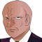
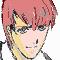
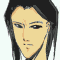
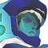

キャロライン 「アベル君、あなたの甘い考えでは、人死にが増える一方よ。浅はかな考えで世界が救えるなんて思わないで」
キャロライン 「アベル君、あなたの甘い考えでは、人死にが増える一方よ。浅はかな考えで世界が救えるなんて思わないで」
 ケネス 「いい加減、イヤになるし、迷いも出てくる・・・。俺達はホントに、正しいことをしてるのか？」
ケネス 「いい加減、イヤになるし、迷いも出てくる・・・。俺達はホントに、正しいことをしてるのか？」
 アベル （ああなる事を知ってて、ケネスさんは・・・）
アベル （ああなる事を知ってて、ケネスさんは・・・）
「天国に行ったって、マイホームは待っちゃぃねえんだよッ！！」
アベル 「どちらにも属さないグレイ・ゾーン・・・。グレイゾン」
タイトル
|
− Reviving memory − |
ナレーション 「宇宙移民者と地球の間に作られた和平は、そう、長くは続かなかった。時は宇宙世紀２５５年、１１月。セツルメント降下という忌まわしい事件を期に、体制派連合軍と反体制派バルバロイは全面戦争へと突入する。だが、多くの犠牲者を出したこの大戦の真相を知る者は、あまりにも少なかった」
ナレーション 「真実を知るために、艦のコンピュータに侵入したアベルは、戦争を起こしている元凶が、グレイゾンにある事を知る。だが、アベル一人はあまりにも無力だった」
コンピュータの前のアベル。
アベル 「僕は・・・、知らなきゃ・・・いけないんだ・・・、知らなきゃ・・・」
アベル 「データ、ファイル一覧・・・搭乗員・・・パイロット」
アベル 「アベル・・・、アベル・イリヤ？」
アベル 「他に、アベルの名前は・・・ない。これが、僕・・・？」
アベル 「記録・・・閲覧・・・、ファイル・・・プロフィール・・・」
アベル・イリヤのデータにアベルの顔。
アベル 「僕・・・、なの？」
アベル 「ディレクトリ・オープン。ファイル一覧」
アベル 「・・・メモリー？」
アベル 「まさか・・・、僕は・・・」
戦渦に巻き込まれた街。倒れている女がいる。流血している。
女 「逃げなさい・・・！」
アベル 「お・・・母さん・・・？」
女 「・・・お母さんはいいから、あなたは・・・っ！」
女の傍に立つ少年の後ろ姿。黒髪の少年。アベルではない。
アベル 「僕は・・・これは・・・誰の記憶？」
アベル 「この映像は・・・いったい何なの！？」
研究室のような風景が滲んで見える。
 ケーラー 「この子は、もはや人ではない」
ケーラー 「この子は、もはや人ではない」
 ダグラス 「人では、ない？」
ダグラス 「人では、ない？」
ケーラー 「そこいらのブーステッド・マンと一緒にされては困ると言う事だよ」
ダグラス 「どう違うのか、素人の私にもわかりやすいように説明してくれ」
ケーラー 「ブーステッド・マンは、所詮、人間を強化しただけに過ぎない。父も母も持つ人間だ。アベルは違う。私がゼロから造り上げた、人の形をした新たな生物だよ」
ダグラス 「人造人間・・・だと」
ケーラー 「いかにも。人造人間だよ。新人類、超人の上を行くにはな」
アベル 「人造・・・人間？ ・・・僕が？」
クレイドル機関訓練所。
何十人もの子供達が、無表情に授業を受けている。

ハイライン 「人を殺傷するにあたって、必要になってくるのが人体の構造だ」ハイライン 「効果的に狙えば、体中のあらゆる部位は急所、あるいは、急所をさらけ出すエサになる」
ハイライン 「貴様らはいずれマシン乗りになる。その時も、この知識が役立つ。しっかりと覚えておけ」
同じく訓練所。
子供達が、格闘技の訓練をしている。
ハイライン 「いいか。ためらうな。相手に隙が出来れば、迷わずに仕留めろ。ためらいは、己の隙となる」
ハイライン 「それは即ち、自分が殺されると言うことだ」
廃棄されたセツルメント。荒れた街を軍用の大型車が走る。
二台には何十人もの子供。監視する兵士もいる。
アベル 「何処に・・・行くんですか？」
 兵士 「お前らの、商品価値を決めるところだよ」
兵士 「お前らの、商品価値を決めるところだよ」
アベル 「商品・・・価値」
クレイドル機関用の仮施設。子供達が連れてこられる。
モニターを見つめる男。モニターの中では、マシンの戦闘が映し出されている。
モニターを見つめる男に、声を掛けるハイライン。
ハイライン 「向こうは、もう始まってるのか？」
 影 「既に半数だ。口先だけで戦場を渡ってきた人間が多いと言うことだろうな」
影 「既に半数だ。口先だけで戦場を渡ってきた人間が多いと言うことだろうな」
ハイライン 「時代がぬるいのさ」
そう告げて振り向き、子供達の前に威圧的に現れるハイライン。
ハイライン 「さぁて、卒業といえば、試験が付き物だなァ」
ハイライン 「卒業試験」
ハイライン 「いいかね」
ハイライン 「貴様らは今から、サバイバル・ゲームをする」
子供達の間を練り歩く。
ハイライン 「わかるかね？ 殺し合いだ。これまでやってきた事を、学友相手に発揮するだけでいい」
ハイライン 「もっとも、ゲームとは言っても、本当に殺して、本当に殺される訳だが・・・」
ハイライン 「命の尊さや道徳ってぇヤツを、冷たい試験管の中に置き忘れた貴様らには、造作もない事だろうがな」
アベル 「・・・冷たい・・・試験管・・・」
ハイライン 「この荒れた誰もいないセツルメント、何をどうやってもいい」
ハイライン 「とにかく、殺し合うんだ」
ハイライン 「どんな手段でもいい。街は広いし、色んな物がある。何を利用してもいい。あるいは、逃げ回ってもいい」
ハイライン 「ただ、急がなければ、こんな所にはろくな食料が残ってない。水も。缶詰だって賞味期限を過ぎてる」
ハイライン 「飲まず食わずが、一番ツラいぞ？」
ハイライン 「最後の３人になった時点で、テストは終了だ」
ハイライン 「生存率は約十パーセント・・・。死んだら、落第。生き残った者だけが卒業だ。わかったな？」
子供達の中で、一人の子供が暴れ出す。
子供 「い、いやだ・・・！」
兵士 「うらぁ！ こいつ！」
子供 「いやだ・・・、いやだ・・・、人殺しなんて」
ハイライン 「面白いな。貴様らはまだ、人の礎となる感情や意志を与えられていない。その状態で、我々に逆らうとは・・・」
アベル 「感情を・・・、与えられ・・・て・・・？」
ハイライン 「人の生存本能がそうさせるのか、あるいは、人は少なからず良心を持って生まれてくるのか・・・。実に興味があるよ。ドクター・ケーラー」
ケーラー（影） 「ハイライン、お前の個人的な感傷などどうでもいい。実験を始めてくれ」
ハイライン 「Ｏ．Ｋ．・・・ファン・カメラの映像回せ！ こいつらをスタート位置まで運んでやれ」
子供達の中で、腰を抜かしたように座り込む少女。
 ユーニス 「・・・・ぁ」
ユーニス 「・・・・ぁ」
兵士 「何をへたりこんでる？」
ユーニス 「ぁ・・・ぅぁ・・・」
アベル 「・・・・っ！」
兵士 「立て！」
ライフル銃でユーニスを殴ろうとする兵士。アベルが間に割って入って、銃をつかむ。
アベル 「待って、くださ・・・」
兵士 「あん？ 何のつもりだァ！？」
兵士はそれを振り払い、アベルを銃で殴る。
アベルは殴り飛ばされるが、すぐに起き上がってユーニスに手を貸す。
アベル 「さ、立って。僕につかまって」
兵士 「ちっ、ませたガキだ」
ハイライン 「今回は、やけに情緒豊かなメンバーになったな。楽しみじゃないか？」
ケーラー 「善悪の区別なしに育てるのは、この辺りが限界だと言うことだ」
ハイライン 「あの赤毛・・・、前回の生き残りか？」
ケーラー 「ぃゃ、個体は違う。それと同じ遺伝子だがな」
アベル 「大丈夫？ 行ける？」
ユーニス 「・・・・うん」
兵士 「お前も行くんだよ、色男」
アベル 「・・・はい・・・」
ハイライン 「さぁて、お楽しみの、ショー・タイムだ」
アベル達は各々、ゲームのスタート地点へと運ばれる。
それを追うのは、中空に浮く小型カメラ。
兵士 「せいぜい生き延びろよ。赤毛ちゃん」
アベル 「・・・生き・・・延びる？」
アベル 「僕は・・・！」
歩いていくアベルの背後から、突然、鉄パイプを持って襲いかかる影。
子供 「わあああぁぁぁっ！」
アベル 「うあっ！？」
最初の一撃をかわすアベル。鉄パイプが跳ね飛ぶ。子供はアベルに殴りかかっていく。
子供 「わあっ！ うわああああっ！」
揉み合いになって倒れる子供とアベル。ハイラインの声が耳に響く。
ハイライン（声） 「敵への奇襲は静かに、静かに殺せ。抵抗が少ないほどいい。雄叫びを上げるのもイイが、そいつは相手をびびらせようとしてるか、自分がびびってるか、だ」
ハイライン 「自分を殺そうとする者がある。生き延びないと、あんな風に、なる」
白昼夢の中のハイラインが指さすのは、動かない子供。顔は見えないが、頭部から、夥しい流血。
アベル 「あんな・・・？ 風・・・に？」大の字のまま動かなくなった子供。顔は見えない。流血が地面を汚していく。
アベル 「うあ・・・・ぶっ・・・・うあああっ・・・あああああああ」子供から離れてうずくまって吐くアベル。
アベル 「なんで・・・？」
アベル 「み、水を・・・、喉が・・・焼けるみたいだ・・・。身体の中がちりちりする・・・」
よろめきながら、比較的綺麗な建造物へ。
途端に、いくつもの石礫が飛んでくる。ほとんどは避けるものの、何発かは当たる。
だが、途中で、石がなくなったのか、攻撃が止む。
アベル 「・・・・ッ！？」
アベルが見る先には、わずかながら返り血を浴びて、脅えるユーニス。
ユーニス 「ひっ！」
アベル 「キミは・・・」
ユーニス 「ぅ・・・ひっ・・・」
アベルに対して警戒するユーニス。
アベル 「大丈夫。何もしないよ。ほら」
ユーニス 「ううっ・・・お母さん・・・」
アベル 「・・・っ！！」
ユーニスの背後、アベルが見る先に、動かなくなった子供。
ユーニス 「・・・大丈夫？」
アベル 「大丈夫だよ。痛くない」
ユーニス 「あの人は？ 血がいっぱい出てる」
アベル 「大丈夫・・・だよ。ね。痛がってないもの。寝てるだけだよ」
ユーニス 「うん」
アベル 「ここは・・・、良くない。おいで、寝てるのを起こしちゃだめだよ」
ユーニス 「うん。・・・お母さんがいないの」
アベル 「そっちにいるかも知れない。探してみよう」
ユーニス 「・・・うん」

アイキャッチ「Ｇ−ＧＵＩＬＴＹ」
アベル 「大丈夫？」
ユーニス 「うん」
アベル （あの機械に見張られてる・・・？）
アベル達を追う、二機のファン付きカメラ。
クレイドル機関仮施設。
ハイライン 「なかなか、センスがいい。前回生存者と同じ遺伝子だけの事はあるな。仲間とつるむ作戦もいい。だが、つるむなら味方は撰んで欲しいな」
ケーラー 「面白い結果が出てきたな」
ハイライン 「なに？」
ケーラー 「あの子は、幼少時、わずかながら人間の女に接触して育っている・・・そのわずかな期間が、影響を及ぼしているやも知れん」
ハイライン 「ふン。じゃあ、こっちはどうなんだ？ はやくも３人を片づけた。実に好戦的だ」
モニターには、銀髪の少年。
ケーラー 「前回の２人と同じく、あのスーパーゲノムから作られた」
ハイライン 「前回を鑑みても、生存候補はこの２人だな」
ナイフが肉体を刺す。そのまま、雪崩れ込む二つの身体。
起き上がったのは、銀髪の少年。腕に傷を負っている。
 ザカリア 「ちっ、探してウロウロするのは得策じゃねえな・・・」
ザカリア 「ちっ、探してウロウロするのは得策じゃねえな・・・」
ザカリア 「かと言って、待ってたって・・・」
周りを見渡し、斜め上を見る。
ザカリア 「相手に見えず、こっちが見える・・・。ビルの上、か？」
ビルの屋上から、遠方のブロックを見ているザカリア。
遠方では、マシンの戦闘が行われている。
ザカリア 「な、なんだ？ ありゃァ？」
ザカリア 「あ、アレが・・・マシン！？」
遠方のブロック。戦闘するマシンが二機。

ケネス 「しつこいッ！ 」

シャイロン 「悪いが、落ちてもらう！」ケネス 「冗談！ あんたエースパイロットなんだろうが！？ 何も好敵手の俺を相手に頑張らなくても、他に弱ッちいヤツがどっかにいるだろ！？」
シャイロン 「そんなモノを落として何の意味がある！？ クズは所詮クズだ。力のないモノだけを世に残せば、支配はより簡単になる！」
ケネス 「誇大妄想抱いてンじゃねえよ！」
廃ビルを破壊して煙幕を作って逃げるケネス。
シャイロン 「逃げるかっ！」
ケネス 「ったく！ 冗談じゃねぇ、フォーリンレジオンのスカウトだって言うから来てみれば、こんな殺し合いに参加させられるとはな・・・！」
何とか、ファン・カメラをまこうとするが、カメラはついてくる。
アベル 「あの、眼が追い掛けてこない場所まで逃げなきゃ・・・！」
ユーニス 「どうしたの？」
アベル 「ううん。それよりも、何か移動手段・・・どれか、動かせる車を探して・・・」
ケネス 「ま。報償の額がおかしいとは思ったんだ。・・・ただでさえ胡散臭い殺し合いに、・・・逃亡は厳禁ってか？」
マシンからの声 「試験戦闘エリアを逸脱しようとしています。ただちに戻らない場合、友軍による攻撃が開始されます」
同時に、エリア外からマシンが数機。
ケネス 「・・・来たな・・・！」
ケネス 「無数の最新鋭の警備マシンと、選りすぐられた、世界中のエリートパイロット３０人・・・どっちが楽かな？」
慣れないステアリングで車を運転するアベル。
車を追うファン・カメラ。
アベル 「直に発火させたら、どうにか動いたけど・・・。この速度じゃ、眼が追いついてくる・・・」
ユーニス 「な、なに、アレ！？」
ユーニスが叫ぶと同時に、高速で迫ってくるマシン。
アベル 「うわっ、わあああっ！」
アベル、ステアリングを誤って、車を停止させてしまう。

パイロット 「何だァ？ ガキぃ？ 逃亡しようとしてるヤツじゃネエのか？」
アベル 「マシン・・・！」
ユーニス 「こ、怖・・・！」
アベル 「走って！」
ユーニス 「う・・・うん！」
アベルたちは車を捨てて走る。
パイロット 「は？ 隣のブロックでやってる実験！？ あ、は、はい。わかりました。はい。捕縛します。え？ はい。逃亡者の方も引き続いて・・・。了解しました。」
近くで爆発が起きる。
アベル 「目は追ってきてないけど・・・」
アベル 「・・・来た！」
隙間から覗くマシンの足。身を隠している建築物は音を立てて軋んでいる。
アベル 「ユーニス、ここはもう駄目だ」
ユーニス 「お母さんは！？」
アベル 「とにかく逃げるんだ。お母さんは後で探してあげるから」
ユーニス 「う、うん」
ユーニスの手を引いて逃げ出すアベル。だが、逃げだした先にも爆発が起きる。
アベル 「こっちにもマシンが・・・」
ユーニス 「お母さん・・・！」
ユーニスを連れ、別方向へ逃げ出す。建築物の隙間の裏道だ。
アベル 「こっちから抜けだすよ」
ユーニス 「うん」
あきらかに破壊された建築物同士が小さなアーチを作っている。アベルはそこにユーニスを運ぶ。
アベル 「あついらが去るまで、ここに隠れていれば・・・」
その時、ユーニスが叫ぶ。
ユーニス 「こっちに来る！」
影になって見えないが、２本アンテナ付きマシンのシルエットが、そばに落ちる。
アベル 「うわあっ」 ユーニス 「きゃああっ」
シルエットから声がする。マイクを通されているらしく、こもった声。
ケネス 「子供・・・！？ なんで民間人がいるんだよ！？ 早く逃げろッ」
その後ろから敵らしいＭマシンが着地。攻撃を開始する。
アベル 「後ろ・・・！」
ケネス 「くっ！ 何匹いやがるっ」
アベル達をかばいながら敵を撃破するケネス。だが被弾する。かなり大きな爆発。
ケネス 「安全な所まで逃がしてる余裕はなさそうだわな。子供２人なら何とか入れるかも知れん。乗れ」
シルエットからコックピットのハッチが開く。
アベル 「こっちへ！」
ユーニスを引っ張ってコックピットへ登る二人。マシンのダメージはかなり大きいようだ。
ユーニス 「・・・うん！」
コックピットに入る二人。それほど窮屈ではない。ユーニスを座席後部へやると、ケネスはアベルを自分の前へと座らせる。
コックピット。
ケネス 「うッし、よく来たなボウズ」
笑うケネスは、ハッチを閉じるが先ほどの被弾での被害が酷いらしい。スクリーンが半分作動していない。すると、叫び声をあげるユーニス。
ユーニス 「血が出てる！」
先ほどの被弾で、ケネスも怪我をしているらしく、その左腕はだらりと下がっている。
ケネス 「さすがに数が多すぎるね。いくら俺様が天才でも・・・。見ての通りだ、ボウズ。左手が言う事をきかない。手伝え。お前がそっちを握るんだ。死にたか、ねえだろ」
頷くアベルは、両手でマニピュレーターを握る。
ケネス 「撃ち方はわかるか？ そう。そうだ、機体は俺が敵の方へ向ける。照準はオートに切り替えた。トリガーはお前が引け。大丈夫だよ。大抵の事はコンピュータがやってくれる」
ケネス 「警備の連中は粗方片付けた・・・。後は鬼が出るか、ジャが出るか・・・」
アベル 「来た・・・！」
ケネス 「よりにもよって、鬼が出たか・・・。シャイロンよぅッ！」
シャイロン 「多勢に無勢だったか？ 動けないなら、私がとどめを刺してやる！」
ケネス 「いいか。まぁだ、引くなよ」
シャイロン 「貴様のような人間に・・・！」
声 「パイロットの生存残り数３名が決定しました。テストは終了です」
シャイロン 「なに！？」
声 「生存者は、ケネス・ハント、シャイロン・チェイ、バーナバス・ガルテン、以上の三名です」
シャイロン 「馬鹿なッ！」
コックピットで、ノイズ。
声 「・・・・者は、ケ・・・・・ト、・・・・・・・イ、バー・・・・・テ・・・・・・名で・」
ケネス 「止まった・・・？」
アベル 「っ！！」
ケネス 「よし、撃ッてぇ！」
トリガーを引くアベル。ライフルからビームが敵のＭマシンを貫き撃破。その感触に驚くアベル。爆発するＭマシンの衝撃に顔をそむけるユーニス。
シャイロン 「なん・・・だとッッッ！？」
 シャイロン 「ぐあああああああぁぁぁぁぁぁぁぁああああっ！？」
シャイロン 「ぐあああああああぁぁぁぁぁぁぁぁああああっ！？」
モニターの前。現実に戻るアベル。
アベル 「・・・僕は・・・」
ブリッヂを出たキャロラインをジーンが迎える。
キャロライン 「お待たせしました」
 ジーン 「早速、話なんですがね」
ジーン 「早速、話なんですがね」
キャロライン 「どうぞ」
ジーン 「今度、カーロ長官が運んでくる、最新型のＧ、アレです。先ほどデータを受け取ったんですがね」
キャロライン 「それが？」
ジーン 「パイロットはスライドさせるんでしょう？」
キャロライン 「そのつもりです」
ジーン 「お偉方は成績から、パイロットを決めるンでしょ？」
キャロライン 「その事に不服が？」
ジーン 「パイロットにはそれぞれ特性がある。見合った機体を与えないと、能力が発揮されませんぜ。メンテナンスする側の意見も大事だと思いますぜ」
キャロライン 「長官には、そう進言しておきます」
ジーン 「へへ、そいつぁ、どうも」
ジーン 「・・・ったく、・・・何だかな」

ナレーション 「ついに、真実を知ってしまったアベルは、現実に翻弄されつつも、脱出を決意する。だが、その脱出を知ってしまった者が、行く手を阻む。 次回、『脱出』 Ｇの鼓動が、今、目覚める」